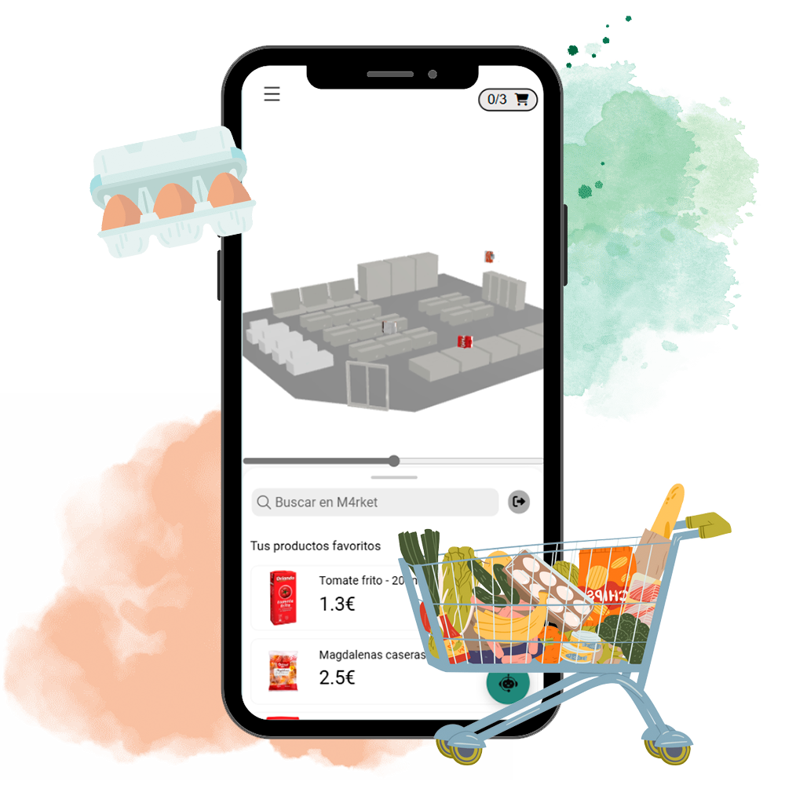
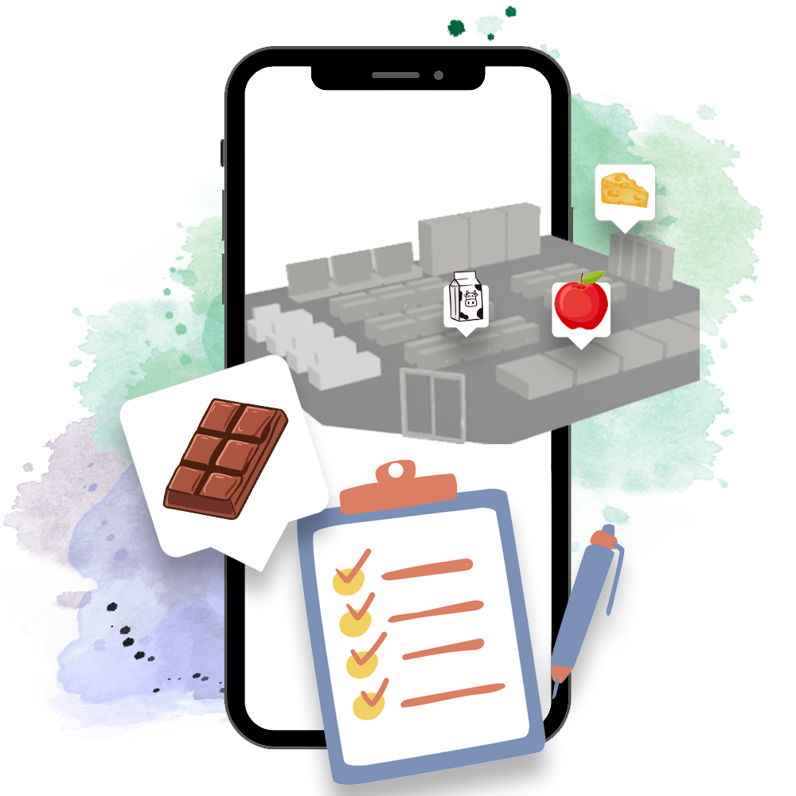
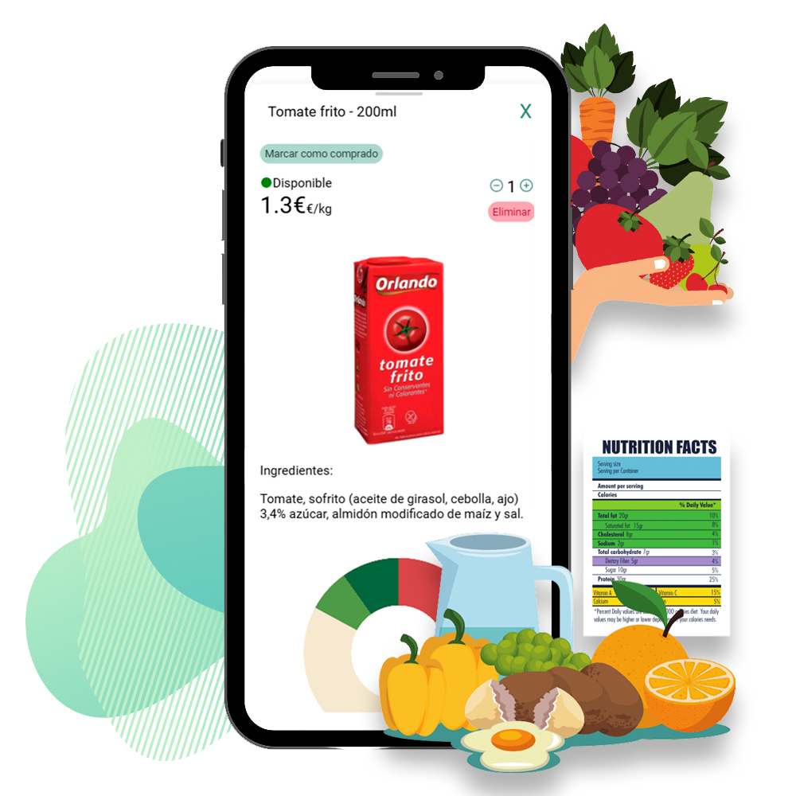
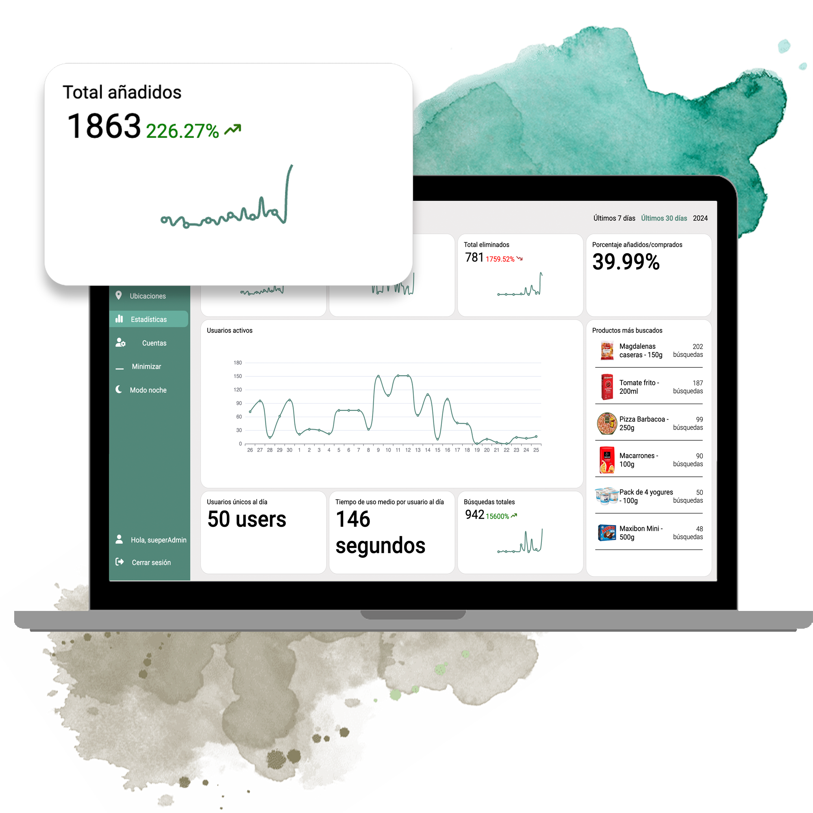

M4RKET la revolución de hacer la compra
M4RKET es una aplicación móvil creada por los integrantes de 4AM. La idea surge como una solución a la pérdida de tiempo en los supermercados a la hora de realizar la compra y la mala experiencia de los usuarios para localizar ciertos productos.


Proporciona a tus clientes una increible experiencia de compra
Interfaz 3D
Con M4RKET tus clientes podrán ver su lista de la compra en una interfaz 3D ahorrándoles mucho tiempo y permitiendo a los empleados dedicar tiempo a otras tareas.
Asistente virtual
Fermin, nuestro asistente virtual que guía a tus clientes hacia productos y ofertas. Simplifica la experiencia de compra, aumenta la satisfacción del cliente y maximiza las ventas

Información de los productos
Al mostrar información detallada como disponibilidad, ingredientes y valores nutricionales, brindamos una experiencia de compra transparente y confiable. Esto ayuda a los clientes a tomar decisiones informadas, promueve una alimentación saludable y genera confianza en la calidad de nuestros productos.
Panel de Control Integral
Nuestra interfaz de administrador ofrece un control completo y eficiente de tu negocio. Con secciones dedicadas al control de productos y stock, gestión de promociones y análisis detallado de estadísticas de uso, te proporcionamos las herramientas necesarias para optimizar tus operaciones.
Desde monitorear el stock hasta comprender el comportamiento del usuario, nuestra interfaz te brinda el poder de tomar decisiones estratégicas basadas en datos en tiempo real.

¿Como usar M4RKET?
M4RKET tiene un funcionamiento muy sencillo e intuitivo para que todo tipo de usuarios puedan accedere y hacer uso de la aplicación, ya sean usuarios con conocimientos tecnológicos como usarios que no.
Para la gente que tenga alguna duda o quiera consultar más información sobre nuestra app y su temática, puede acceder a nuestro objeto de aprendizaje para nutrirse de conocimiento